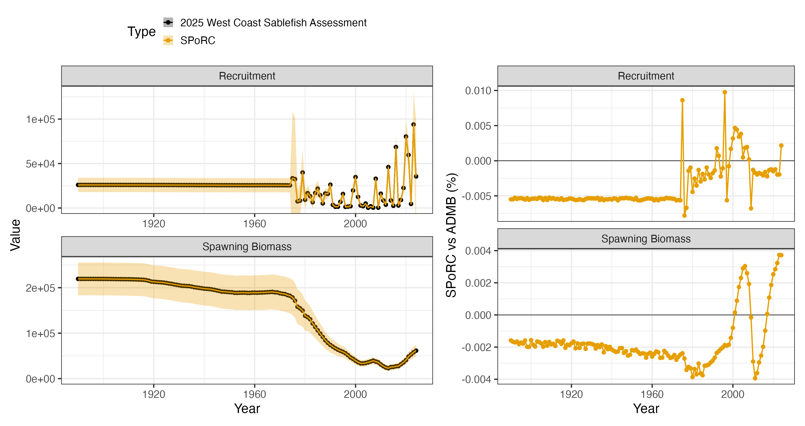
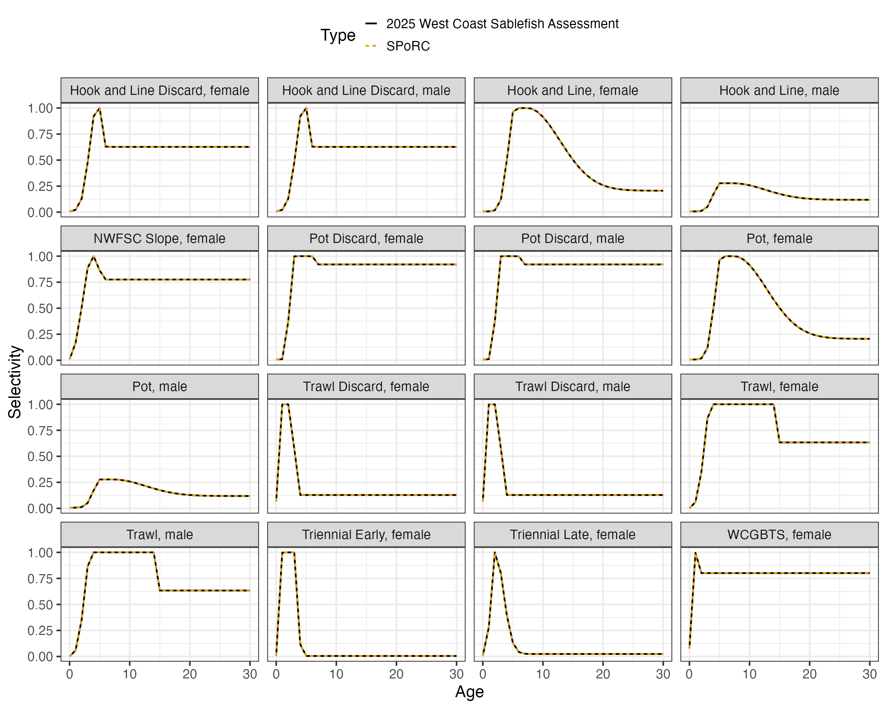

Case Study: West Coast Sablefish
ac_wc_sablefish_case_study.RmdOverview
This case study reproduces the 2025 West Coast sablefish assessment,
run in Stock Synthesis 3, in SPoRC.
The model is single region, two sex, single season, with six catch fleets, four trawl surveys and an index built on the recruitment deviations themselves:
| Source | Years | Observations | Likelihood |
|---|---|---|---|
| Catch, three gears and their discard fleets | 1890–2024 | 620 | Lognormal, CV 0.01 |
| Triennial early and late, NWFSC slope, WCGBTS | 1980–2024 | 35 | Lognormal |
| Recruitment index | 2020–2024 | 5 | Normal on the deviation |
| Fishery age compositions, six fleets | 1983–2024 | 198 | Multinomial |
| Survey age compositions, four surveys | 1983–2024 | 52 | Multinomial |
Ages run to with compositions binned to to , and model years run to . Recruitment is age 0 and comes off the same year’s spawning biomass, on a Beverton-Holt curve with steepness fixed at 0.75 and .
library(SPoRC)
library(dplyr)
library(ggplot2)
data("sgl_rg_wc_sablefish_data")
dat <- sgl_rg_wc_sablefish_data
yrs <- dat$years
n_yrs <- length(yrs)
n_ages <- length(dat$ages)
n_fish <- dat$n_fish_fleets
n_srv <- dat$n_srv_fleetsWhat Stock Synthesis says differently
Seven conventions hold the whole bridge, and each of them can easily
forgotten if missed. Age 0 fish spawn in the equilibrium year only.
Spawning biomass is female numbers times fecundity at age, formed before
the year’s recruits settle, so the age 0 cell is empty in every year the
model runs. The unfished equilibrium is different: it already holds
at age 0, and that is what
and
are built from. Dropping those fish everywhere moves
by 0.009 percent, which the Beverton-Holt then propagates into recent
recruitment. SPoRC forms the first year’s spawning biomass
from the initial numbers and every later year’s from the survivors, so a
maturity at age 0 that is the fecundity ratio in
and zero afterwards is exact.
The recruitment deviation is not the deviation. Stock Synthesis generates recruitment as
with
the bias ramp, so SPoRC’s deviation is the assessment’s
less the bias term. The ramp’s four breakpoints (1974, 1979, 2023, 2024)
are given to bias_year in deviation index space rather than
as calendar years.
Fishing mortality is solved, not estimated. Under the hybrid method
Stock Synthesis conditions
on the catch, while SPoRC estimates it against a lognormal
catch likelihood at the data file’s CV of 0.01. The two agree to six
digits, which is as close as that likelihood’s CV of 0.01 holds
them.
Extra survey standard deviation is added, not combined in quadrature.
For each survey,
.
SPoRC currently has no parameter for it, so it is kept at
the assessment’s estimate.
The recruitment index is a likelihood on the deviations. Fleet 11 is
units 36, a normal likelihood on
itself rather than on abundance. SPoRC holds this as
srv_idx_type = "recdev", a survey fleet that observes year
class strength directly and reads no part of the population.
Two fleets have two composition data sources. The trawl fishery and
the West Coast groundfish bottom trawl survey each have sexed and
unsexed compositions in the same years. SPoRC holds one
composition type per fleet, so each gets a second fleet sharing the
first’s selectivity: a fishery fleet companion with no catch
observation, and a survey fleet companion with no index.
Model dimensions
Single region, single season and two sexes, so the population, region and season subscripts collapse to one and are dropped throughout.
input_list <- Setup_Mod_Dim(
years = yrs,
ages = dat$ages,
lens = dat$lens,
n_regions = dat$n_regions,
n_sexes = dat$n_sexes,
n_fish_fleets = n_fish,
n_srv_fleets = n_srv,
n_seas = dat$n_seas,
n_pop = dat$n_pop,
natal_region = dat$natal_region,
verbose = FALSE
)Recruitment
Recruitment is age 0 off the same year’s spawning biomass, which is
rec_lag = 0, on a Beverton-Holt curve at fixed steepness.
The model starts from an unfished equilibrium with no initial deviations
and no initial fishing mortality, so InitDevs_spec = "fix"
and the initial age structure is the bare geometric series.
input_list <- Setup_Mod_Rec(
input_list = input_list,
rec_model = "bh_rec",
rec_lag = 0,
SR_ref_yr = 1,
t_spawn = dat$t_spawn,
h_spec = "fix",
steepness_h = array(qlogis((dat$steepness - 0.2) / 0.8), dim = c(1, 1)),
sigmaR_spec = "fix",
ln_sigmaR = array(log(dat$sigmaR), dim = c(2, 1, 1)),
sigmaR_switch = 1,
do_rec_bias_ramp = 1,
bias_year = dat$bias_year,
max_bias_ramp_fct = dat$max_bias_adj,
RecDevs_pen_center = "fixed",
dont_est_recdev_last = 0,
init_age_strc = 2,
equil_init_age_strc = 0,
InitDevs_spec = "fix",
ln_global_R0 = dat$mle$ln_R0
)Steepness is bounded on a logit over
,
so the fixed value goes in transformed. SR_ref_yr = 1 puts
the unfished spawning biomass per recruit on the first year’s weight and
fecundity at age, which is where the assessment computes
.
bias_year is the one argument here that is easy to get
wrong. It is indexed in deviation space, not in calendar years, and the
assessment’s four breakpoints are the
last_early_yr_nobias_adj,
first_yr_fullbias_adj, last_yr_fullbias_adj
and first_recent_yr_nobias_adj of its control file. The
bridge stage below checks the resulting ramp against the assessment’s
own biasadjuster column, which is the cheapest way to know
it went in right.
Biological dynamics
Weight at age and fecundity at age are empirical and year specific,
read from the assessment’s wtatage.ss. Maturity is the
ratio of the two, so spawning biomass is numbers times fecundity, with
the age 0 cell with its value in the equilibrium year alone.
input_list <- Setup_Mod_Biologicals(
input_list = input_list,
WAA = dat$WAA,
WAA_fish = array(dat$WAA, dim = c(dim(dat$WAA), n_fish)),
WAA_srv = array(dat$WAA, dim = c(dim(dat$WAA), n_srv)),
MatAA = dat$MatAA,
fit_lengths = 0,
AgeingError = dat$AgeingError,
M_spec = "est_ln_M",
Use_M_prior = 1,
M_prior = dat$M_prior,
addtocomp = dat$addtocomp,
comp_const_obs = 1,
addtosrvidx = 0,
addtofishidx = 0
)
# the age 0 fish are spawners in the equilibrium year only, and setup refuses a
# non-zero maturity at the recruit age under rec_lag = 0
input_list$data$MatAA[1, 1, 1, 1, 1, 1] <- dat$mat_age0_yr1Natural mortality is one value for both sexes, the assessment’s male parameter being set equal to the female’s, under a lognormal prior with median and standard deviation 0.31 on the log scale.
The ageing error matrix maps the 71 modeled ages onto the 51 composition bins, the last of which accumulates. The assessment prints it with the observed bins descending, so it is transposed on the way in.
Movement and tagging
Neither is used.
input_list <- Setup_Mod_Movement(input_list = input_list, use_fixed_movement = 1,
Fixed_Movement = NA, do_recruits_move = 0)
input_list <- Setup_Mod_Tagging(input_list = input_list, use_conv_fish_tagging = 0)Catch and fishing mortality
input_list <- Setup_Mod_Catch_and_F(
input_list = input_list,
ObsCatch = dat$ObsCatch,
UseCatch = dat$UseCatch,
Use_F_pen = 0,
ln_F_mean_spec = "fix",
sigmaC_spec = "fix",
ln_sigmaC = array(log(dat$sigmaC), dim = c(1, n_yrs, 1, n_fish))
)The assessment has no fishing mortality penalty and no mean fishing
mortality parameter, so Use_F_pen = 0 and
ln_F_mean_spec = "fix" leave the deviations with all of
.
Fixing the mean matters: with the deviations unpenalized the mean and
their average are exactly redundant, and fixing one of them is what
keeps that ridge from going off the rails.
Years before a fleet’s first landing are true fishery closures,
entered as a zero catch with UseCatch = 0, which forces
to zero and drops the deviation. The trawl fleet’s composition companion
is different: it has no catch observation at all, entered as
NA, which leaves its fishing mortality estimated. Seeded at
it takes nothing out of the population, so its catch at age is the trawl
fleet’s numbers at age scaled by the same selectivity, which is what
makes its compositions the right expectation. This is needed because one
fleet can’t have two sets of composition data.
Fishery compositions
input_list <- Setup_Mod_FishIdx_and_Comps(
input_list = input_list,
ObsFishIdx = array(NA_real_, dim = c(1, n_yrs, 1, n_fish)),
ObsFishIdx_SE = array(NA_real_, dim = c(1, n_yrs, 1, n_fish)),
UseFishIdx = array(0, dim = c(1, n_yrs, 1, n_fish)),
fish_idx_type = rep("none", n_fish),
FishIdx_LikeType = rep("lognormal", n_fish),
ObsFishAgeComps = dat$ObsFishAgeComps,
UseFishAgeComps = dat$UseFishAgeComps,
ISS_FishAgeComps = dat$ISS_FishAgeComps,
ObsFishLenComps = array(NA_real_, dim = c(1, n_yrs, 1, 1, dat$n_sexes, n_fish)),
UseFishLenComps = array(0, dim = c(1, n_yrs, 1, n_fish)),
ISS_FishLenComps = array(0, dim = c(1, n_yrs, 1, dat$n_sexes, n_fish)),
FishAgeComps_LikeType = rep("Multinomial", n_fish),
FishLenComps_LikeType = rep("none", n_fish),
FishAgeComps_Type = paste0(ifelse(dat$fish_sex == 3, "spltRjntS", "agg"),
"_Year_1-terminal_Fleet_", seq_len(n_fish)),
FishLenComps_Type = paste0("none_Year_1-terminal_Fleet_", seq_len(n_fish))
)FishAgeComps_Type is where the two composition data
sources show up. The three gear fleets have sexed compositions, which is
spltRjntS, females and males in one vector normalized
together. The three discard fleets and the trawl companion have
compositions with the sexes pooled, which is agg.
The sample sizes were built as
with the assessment’s variance adjustment for that fleet, which run from 0.005 to 0.97 here, and 102 for a sexed composition and 51 for a pooled one.
Survey indices and compositions
t_srv <- array(dat$t_srv, dim = c(1, 1, n_srv))
# The assessment reports each survey's standard error with its estimated extra
# standard deviation already added. Subtracting it recovers what went in, which
# is what SPoRC wants, since the extra component is kept as a parameter.
input_se <- function(dat) {
se <- dat$ObsSrvIdx_SE
for(f in seq_along(dat$mle$extra_sd)) se[,,,f] <- se[,,,f] - dat$mle$extra_sd[f]
se
}
input_list <- Setup_Mod_SrvIdx_and_Comps(
input_list = input_list,
ObsSrvIdx = dat$ObsSrvIdx,
# The assessment reports its survey standard errors with an estimated extra
# standard deviation already added, so subtracting it recovers the input errors
# and the extra component is kept as a parameter instead. Fleets 1 and 4 sit
# at the assessment's lower bound, which is it asking for none, so they are kept.
ObsSrvIdx_SE = input_se(dat),
sigmaSrvIdx_spec = "est_additive",
sigmaSrvIdx_map = c(NA, 1, 2, NA, NA, NA),
ln_sigmaSrvIdx = log(pmax(c(dat$mle$extra_sd, 1e-8, 1e-8), 1e-8)),
UseSrvIdx = dat$UseSrvIdx,
srv_idx_type = c(rep("biom", n_srv - 1), "none"),
SrvIdx_LikeType = rep("lognormal", n_srv),
ObsSrvAgeComps = dat$ObsSrvAgeComps,
UseSrvAgeComps = dat$UseSrvAgeComps,
ISS_SrvAgeComps = dat$ISS_SrvAgeComps,
ObsSrvLenComps = array(NA_real_, dim = c(1, n_yrs, 1, 1, dat$n_sexes, n_srv)),
UseSrvLenComps = array(0, dim = c(1, n_yrs, 1, n_srv)),
ISS_SrvLenComps = array(0, dim = c(1, n_yrs, 1, dat$n_sexes, n_srv)),
SrvAgeComps_LikeType = rep("Multinomial", n_srv),
SrvLenComps_LikeType = rep("none", n_srv),
SrvAgeComps_Type = paste0(ifelse(dat$srv_sex == 3, "spltRjntS", "agg"),
"_Year_1-terminal_Fleet_", seq_len(n_srv)),
SrvLenComps_Type = paste0("none_Year_1-terminal_Fleet_", seq_len(n_srv)),
t_srv = t_srv
)All four surveys are in month 7, so t_srv = 0.5 and the
index is formed from numbers decayed half a year. The standard errors
already hold the extra standard deviation added to them.
Selectivity
Every fleet is on the age based double normal, dbnrml,
six parameters controlling the start of the plateau, its end, the
ascending and descending widths, and the selectivity at the first and
last bins. Three things about how the assessment arranges them have to
come across.
The trawl and hook and line fleets change in 2002 and the two trawl
and hook and line discard fleets in 2011 and 2019, which are time
blocks. The pot fleet mirrors hook and line outright, and each
composition companion mirrors its parent, which is
est_shared_f_x. And the hook and line male curve is offsets
on the female’s, with a fifth male parameter scaling the whole curve,
which is fish_sel_sex_offset = "par_apical".
# selectivity blocks are named by the years the assessment's surfaces change
blk_string <- function(blocks, fleet) {
st <- blocks[[fleet]]$blk_yr
en <- c(st[-1] - 1, n_yrs)
paste0("Block_", seq_along(st), "_Year_", st, "-",
ifelse(en == n_yrs, "terminal", en), "_Fleet_", fleet)
}
input_list <- Setup_Mod_Fishsel_and_Q(
input_list = input_list,
fish_sel_model = paste0("dbnrml_Fleet_", seq_len(n_fish)),
cont_tv_fish_sel = paste0("none_Fleet_", seq_len(n_fish)),
fish_sel_blocks = unlist(lapply(seq_len(n_fish), function(f) blk_string(dat$fish_sel_blocks_ss3, f))),
fish_q_blocks = paste0("none_Fleet_", seq_len(n_fish)),
fish_fixed_sel_pars_spec = replace(rep("est_all", n_fish), c(3, n_fish),
c("est_shared_f_2", "est_shared_f_1")),
fish_sel_sex_offset = replace(rep("par", n_fish), c(2, 3), "par_apical"),
fish_q_spec = rep("fix", n_fish)
)
input_list <- Setup_Mod_Srvsel_and_Q(
input_list = input_list,
srv_sel_model = paste0("dbnrml_Fleet_", seq_len(n_srv)),
cont_tv_srv_sel = paste0("none_Fleet_", seq_len(n_srv)),
srv_sel_blocks = unlist(lapply(seq_len(n_srv), function(sf) blk_string(dat$srv_sel_blocks_ss3, sf))),
srv_q_blocks = paste0("none_Fleet_", seq_len(n_srv)),
srv_fixed_sel_pars_spec = replace(rep("est_all", n_srv), n_srv,
paste0("est_shared_f_", n_srv - 1)),
srv_sel_sex_offset = rep("par", n_srv),
srv_q_spec = c(rep("est_all", n_srv - 1), "fix"),
t_srv = t_srv
)Catchability floats in the assessment, meaning it is solved rather than estimated, which reaches the same optimum as estimating it. The composition companion of the bottom trawl survey has no index, so its catchability stays out of the parameter vector.
All six parameters are on the same scale in both, so the assessment’s values go straight in as starting values, and the parameter count comes out at the assessment’s own 32.
fish_sel_sex_offset = "par_apical" is what holds the
male curve. The par half makes the male slots offsets on
the female’s, which is how the assessment writes the peak and the
selectivity at the last bin. The apical half is the
assessment’s fifth male parameter: the height the male ascending and
descending limbs are built up to and the plateau sits at, with the two
ends left where their own parameters put them. That is a different
statement from a "scale" offset, which multiplies the
finished curve and holds the ends along with it, and the difference is
not cosmetic: the two agree on the curve at any one point but disagree
about how it moves, so under a scale offset the assessment’s estimate is
not a stationary point and the fit walks away from it. The male
ascending and descending widths take no offset and the selectivity at
the male first bin is read from the female’s parameter, exactly as the
assessment does, so those three offsets are zero.
Weighting
input_list <- Setup_Mod_Weighting(
input_list = input_list,
Wt_Catch = 1, Wt_FishIdx = 0, Wt_SrvIdx = 1, Wt_Rec = 1, Wt_F = 1, Wt_Tagging = 0,
Wt_FishAgeComps = array(1, dim = c(1, n_yrs, 1, dat$n_sexes, n_fish)),
Wt_FishLenComps = array(1, dim = c(1, n_yrs, 1, dat$n_sexes, n_fish)),
Wt_SrvAgeComps = array(1, dim = c(1, n_yrs, 1, dat$n_sexes, n_srv)),
Wt_SrvLenComps = array(1, dim = c(1, n_yrs, 1, dat$n_sexes, n_srv))
)
data <- input_list$data
parameters <- input_list$par
mapping <- input_list$mapThe assessment’s composition weights are already in the sample sizes, so every weight here is one.
The recruitment index
The last survey fleet observes the recruitment deviations themselves
rather than any part of the population. That is
srv_idx_type = "recdev", set with the other survey fleets
above. Its predicted value is
with
the center the recruitment penalty asserts for that year. The difference
matters here: under a bias ramp SPoRC’s stored deviation
and the deviation the assessment reports differ by the bias correction,
and it is the anomaly, how strong the year class was against what the
model expected, that such an index measures. Taking it from the
penalty’s own center is what makes the two agree without any special
casing.
Two things follow from the deviations being signed. The fleet takes
SrvIdx_LikeType = "normal", since a lognormal cannot have a
negative observation, and setup refuses any other choice for it. It also
reads no numbers at age, so its selectivity, survey timing and weight at
age are never used and its compositions are left off. Its catchability
is an ordinary element of ln_srv_q, kept on the log scale
where the assessment has it on the natural scale.
Starting at the assessment’s estimate
Every parameter is set to the assessment’s maximum likelihood
estimate, read from ss3.par at twelve significant digits
rather than from the report file, which prints six. The bridge helper
does this in one call; the pieces are the recruitment deviations less
their bias correction, log fishing mortality as a fixed mean plus
deviations, the four catchabilities, natural mortality, and the
selectivity parameters in SPoRC’s transforms.
source(system.file("tests", "testthat", "helper-bridge_wc_sablefish.R", package = "SPoRC"))
input_list <- seed_wc_sablefish_mle(build_wc_sablefish_input(dat), dat)
seed <- fit_model(input_list$data, input_list$par, input_list$map,
do_optim = FALSE, silent = TRUE)The comparison before anything is optimized, against a report file with six significant digits:
numbers at age 5.8e-04 %
spawning biomass 4.5e-04 %
recruitment 3.9e-04 %
total biomass, January 1 5.1e-04 %
predicted catch 4.9e-04 %
survey indices 5.4e-04 %
bias ramp 0 (absolute)
selectivity, all twelve fleets 5.0e-07 (absolute)
expected age compositions 6.5e-07 (absolute)SPoRC writes each likelihood component as a proper
density where the assessment drops normalizing constants, so the
comparison subtracts exactly the constants it omits:
| Component |
SPoRC less constants |
Assessment | Difference |
|---|---|---|---|
| Catch | 0.0000072 | 0.0000000 | |
| Triennial early index | -9.5934212 | -9.5934200 | |
| Triennial late index | -4.8821916 | -4.8822100 | |
| NWFSC slope index | -4.6967965 | -4.6968000 | |
| WCGBTS index | -25.5881300 | -25.5880000 | |
| Trawl ages | 262.1262400 | 262.1260000 | |
| Hook and line ages | 303.7876300 | 303.7880000 | |
| Pot ages | 86.7638400 | 86.7638000 | |
| Trawl discard ages | 248.4356900 | 248.4360000 | |
| Hook and line discard ages | 54.7879350 | 54.7879000 | |
| Pot discard ages | 65.7715190 | 65.7715000 | |
| Triennial early ages | 12.2708500 | 12.2709000 | |
| Triennial late ages | 73.2284320 | 73.2284000 | |
| NWFSC slope ages | 35.3020090 | 35.3020000 | |
| WCGBTS ages | 199.0197000 | 199.0200000 | |
| Recruitment deviations | 22.4041000 | 22.4041400 | |
| Natural mortality prior | 0.2040659 | 0.2040690 | |
| Recruitment index | 1.2484147 | 1.2484100 |
The total comes to 1335.7715 against the assessment’s 1335.7716, a difference of , which is the report file’s own print precision.
Fitting and comparison
est <- fit_model(input_list$data, input_list$par, input_list$map,
do_optim = TRUE, newton_loops = 3, silent = TRUE)
est$sdrep <- RTMB::sdreport(est, hessian.fixed = est$he(est$optim$par))709 parameters, 32 of them selectivity, which is the assessment’s own count. The objective falls from -879.4254 at the assessment’s estimate to -879.4297, a drop of 0.0043, and the fitted selectivity stays within of the assessment’s on every one of the twelve fleets.
| Median | Maximum | |
|---|---|---|
| Spawning biomass | -0.0020 % | 0.0039 % |
| Recruitment | -0.0054 % | 0.0098 % |
SPoRC |
Assessment | |
|---|---|---|
| 10.165054 | 10.165108 | |
| Natural mortality | 0.0877750 | 0.0877770 |
| Triennial early catchability | 1.022891 | 1.022873 |
| Triennial late catchability | 2.770002 | 2.770076 |
| NWFSC slope catchability | 0.509775 | 0.509779 |
| WCGBTS catchability | 1.049713 | 1.049699 |
| Recruitment index catchability | 0.237148 | 0.237144 |


Why the two differ
Everything in the population dynamics, the observation model and the selectivity agrees at the assessment report’s own print precision, and so does every likelihood component. Refitting moves spawning biomass by four thousandths of a percent.
Two things account for that much. The assessment solves fishing
mortality from the catch where SPoRC estimates it against a
lognormal catch likelihood at CV 0.01, so the two agree only to the
precision that likelihood enforces; and the extra survey standard
deviation is kept at the assessment’s estimate, because
SPoRC has no parameter for it. Neither moves the fit, but
the second does mean the standard errors here do not have that source of
uncertainty.